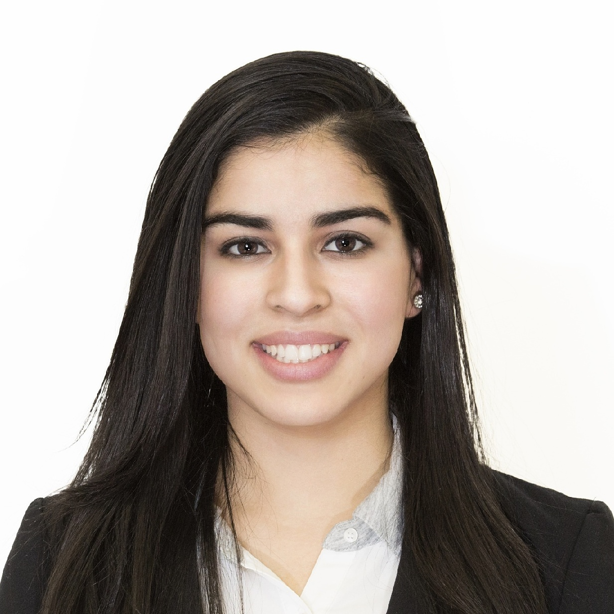

Helping families navigate OPWDD self-direction with confidence, clarity, and compassion.
My name is Shannen McCabe, and I am the founder of Ayuda Support. I work directly with individuals and families in New York who are enrolled in — or considering — OPWDD self-directed services.
Self-direction gives people with developmental disabilities the power to choose their own supports, hire their own staff, and manage a personalized budget. It is a meaningful path — but it can also feel overwhelming. That is where I come in.
As your Support Broker, I will guide you through every step of the process so you can make informed decisions with confidence.

I am not only a Support Broker — I am also the parent of a young man who self-directs his own services through OPWDD. Supporting my son through this process has given me firsthand experience with the responsibilities, challenges, and rewards that come with self-direction.
I understand what it feels like to sit across the table and make important decisions about your loved one's care. I know the questions that keep families up at night, and I know how much it matters to have someone in your corner who truly understands the system — not just professionally, but personally.
I bring a unique combination of advocacy experience, financial expertise, and community leadership to my work as a Support Broker:
This background allows me to support families not only with the day-to-day coordination of services, but also with the financial planning, budgeting, and organizational skills that are essential to successful self-direction.
Families choose to work with me because I combine real-world experience with professional expertise. I have walked this road myself, and I bring that understanding into every conversation, meeting, and decision.
I am fully bilingual in English and Spanish. Providing services in both languages is an important part of my practice. Whether you are more comfortable communicating in English or Spanish, I am here to support you in the language that feels right for your family.
I am organized, responsive, and committed to treating every family I work with the same care and attention I bring to my own son's services. You will never feel like just another case — because to me, you are not.
If you or your family are considering self-direction through OPWDD, I would love to speak with you. I offer a free initial consultation to learn about your situation and answer your questions — with no pressure and no obligation.
Schedule a Free Consultation